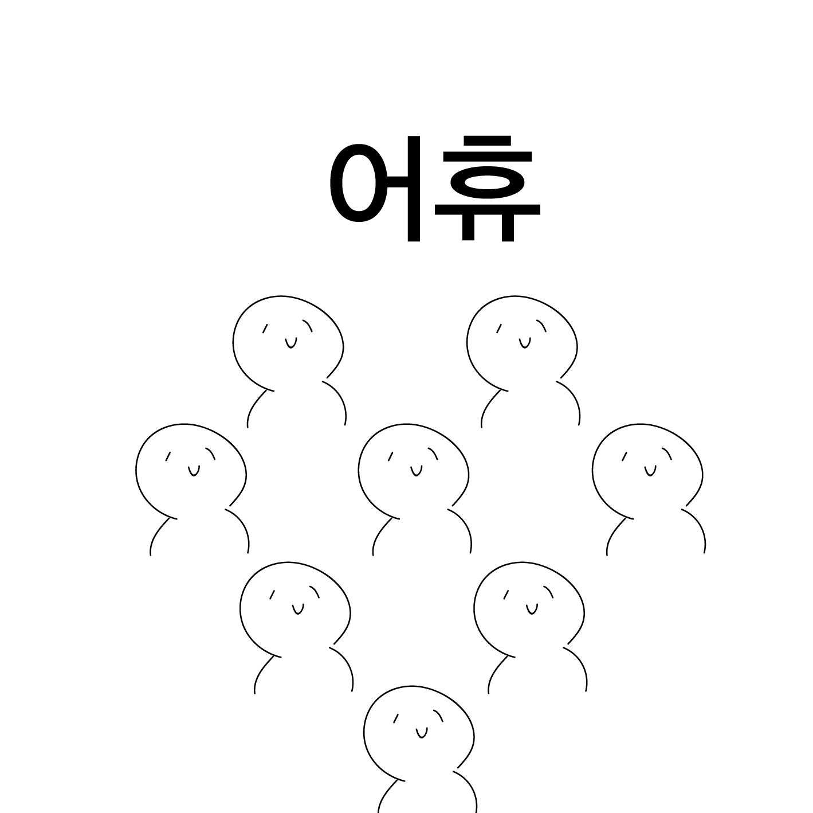

특히 햇살이 내리쬐고 저마다의 사람들이 출근으로 분주할 때,
그 시점에 나는 잠을 자는게 좋다.
아무튼,
이번 방학은 조금 생산적이게 보내고 싶었다.
하여 리스트를 작성해보았다.
완성 못한 과제 완성하기
꾸준한 운동으로 체력 기르기
여행 다녀오기
개인작업 하기
방학이 끝나고 리스트를 보며
실행하지 못한 것에 빗금을 쳤는데,
딱 하나, 여행 다녀오기만 살아남았다.
나름의 첫 해외여행이었다.
사람 많은 것을 싫어하는 나는 일본의 소도시인 '시코쿠'를 다녀왔다.


냠.

나오시마에 가서 쿠사마 야요이 호박도 보고, 전시도 봤다.
방구석에서 잠 자는게 제일 좋은 내게는 새로운 경험이었다.
하암 이제 다시 자러가야지
